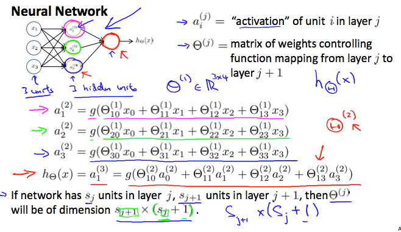
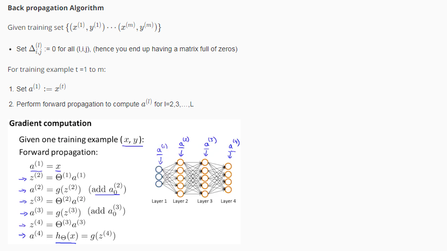
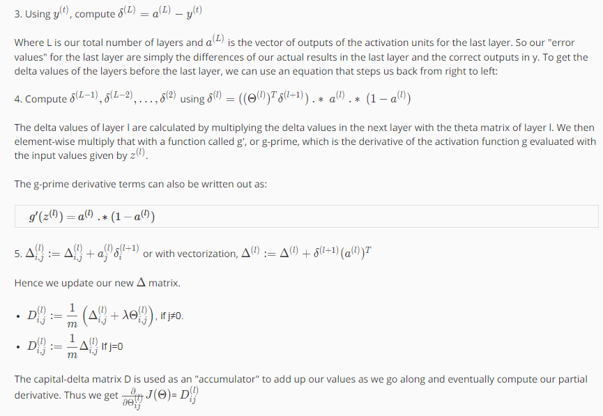
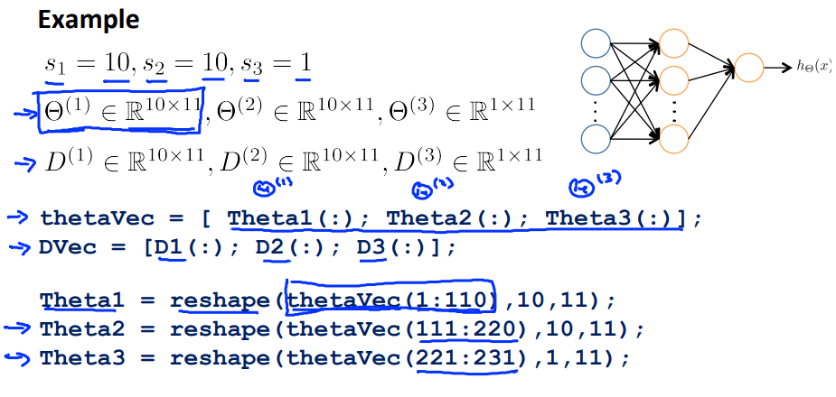
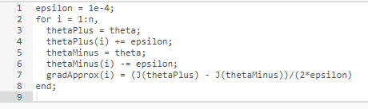
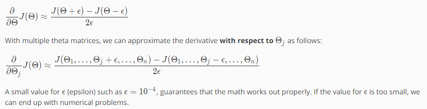

下面来总结下神经网络,是可以模拟任何函数的，具体原理可搜索”神经网络 任意函数”，这个和AND、OR等逻辑操作可以结合在一起思考，具体原理需要进一步学习研究呀!
那么如何训练数据呢，分如下几个步骤
- 随机初始化权重
- 实现前向网络 ,为每个样本 获得 h(Θ)
- 实现计算代价函数的代码 J(Θ)
- 对样本进行循环，对每个样本实现bp算法求偏导
- 使用梯度检验
- 使用梯度下降或者高级优化算法，得到最小化J(Θ)的Θ
先看第1步：
这步是为了打破对称(Symmetry breaking), 假如有2个隐藏层1个输出层，INIT_EPSILON取值为0到1，那么初始化代码如下
Theta1 = rand(10,11) (2 INIT_EPSILON) - INIT_EPSILON;
Theta2 = rand(10,11) (2 INIT_EPSILON) - INIT_EPSILON;
Theta3 = rand(1,11) (2 INIT_EPSILON) - INIT_EPSILON;
第2步：
比如如下的神经网络，那么前向网络是这样计算的：
.
第3步：
比如这样一个神经网络，是个多分类问题：
.
输出层是这样的：
.
代价函数如下所示：
.
第4步：
具体看这篇文章讲解了推导过程： Backpropagation 算法的推导与直观图解
这里andrew对bp有个总结，如下图所示:
.
.
注意这里还有个技巧，在初始化Θ时，对于高级优化函数，需要展开(unroll)，在函数里用reshape来重塑成矩阵，如下图所示：
.
第5步：
梯度检验示例代码如下：
.
就是用这个公式的：
.
第6步：
第6步就是用高级优化算法来代入上面步骤的公式求最小化J(Θ)的Θ 了，类似于逻辑回归了.
<完>